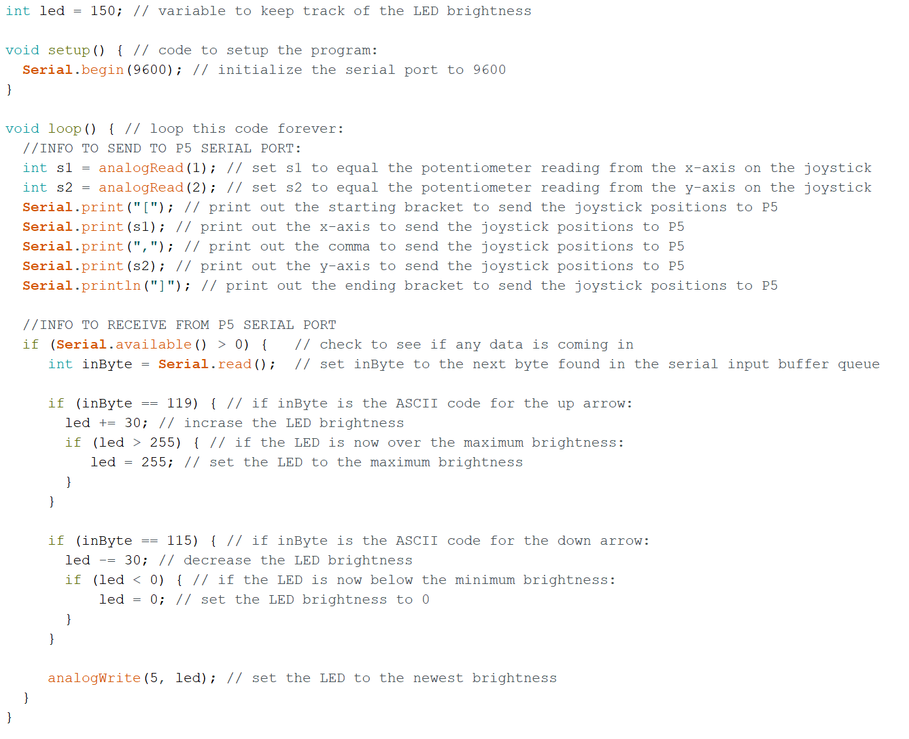
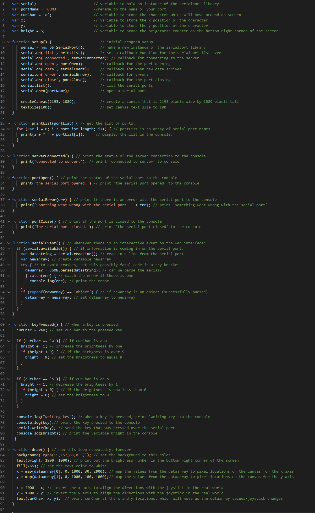

Jacob's Final Project
Here's the documentation for my final project
considering pulling up my blinds by the string, I decided that would be a lot of weight for any of the components in our toolkits to handle without a strong
set of gears, and therefore a big hassle. So, I instead developed a device that would rotate the rod on my blinds that tilts the shades, allowing more or less light into the room.
I wanted this device to be controlled by a remote contorl as well as function autonomously each morning.
To create this device, I utilized the stepper motor to rotate the blinds. Once I modeled and 3D printed a coupler that would connect the stepper motor shaft to the blind opening rod,
all I had to do was create a housing for the motor, arduino, IR sensor, and stepper controller. Once I modeled 3D printed the chasis, the physical side of the project was done. After I flashed
the appropriate code onto the arduino, my project was done. Below are the steps I took to create this device.

connect to the blind opening rod.

